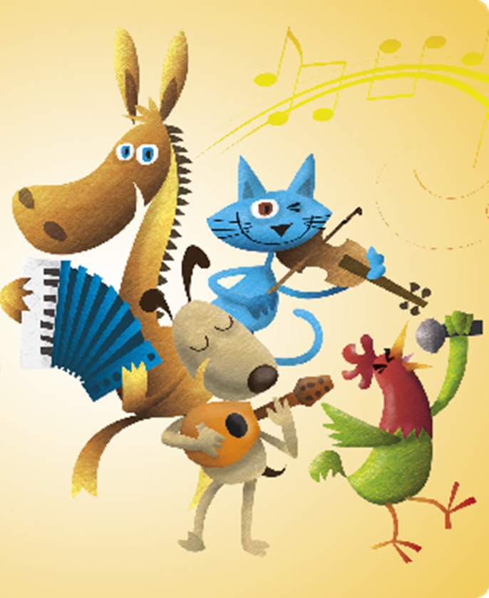
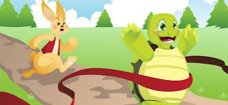
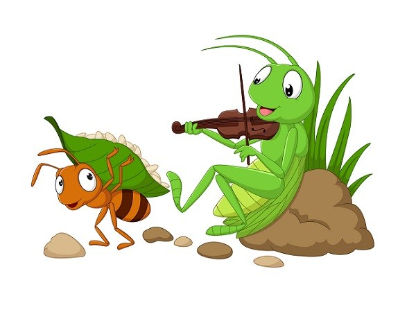
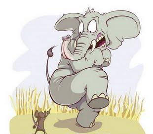
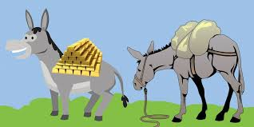
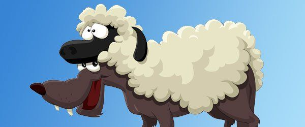

CUENTOS DE ANIMALES
Cuentos con los animales más tiernos y divertidos como protagonistas
¿A tus hijos les gustan las historias de animales? Entonces seguro que estos relatos les apasionarán, porque a través de divertidos personajes clásicos como Los siete cabritillos, El Patito Feo o La Ratita Presumida, de las fábulas infantiles cuyos protagonistas suelen ser animales, y de nuevos animales amigos como Rino el Rinoceonte, o El Camello Donatello, descubrirán un universo lleno de fantasiosos cuentos.
Cuento «Los músicos de Bremen»

Había una vez un burro que vivía en una granja. Durante muchos años había ayudado a su amo el campesino, cargando los pesados sacos de trigo que llevaba al molino, pero ahora era viejo y ya no podía hacerlo. El campesino no quería seguir alimentando a un burro viejo que para él era inservible, así que estaba planeando sacrificarle. El burro, que no tenía ni un pelo de tonto, adivinó las crueles intenciones de su amo y una noche, cuando todos dormían ya, se escapó de la granja.
Al viejo burro le gustaba tocar el acordeón y siempre había soñado con ser músico. Así que se dirigió rumbo a la ciudad de Bremen para tratar de triunfar siguiendo su sueño. Se forma la banda En su camino hacia Bremen, el burro se tropezó con un perro de caza que jadeaba con la lengua afuera. -¿Estás bien amigo perro?- le preguntó. -Sí gracias, estoy solo un poco cansado porque me estoy escapando de mi amo que quiere matarme porque ya soy viejo y no le sirvo para ir de caza. -¡No sabes cómo te comprendo amigo! Me encuentro en la misma situación que tú, y estoy yendo a Bremen para ganarme la vida como músico. ¿Por qué no te vienen conmigo? Podríamos formar una banda, ¡tú podrías tocar la guitarra!
Al perro le pareció una idea estupenda, así que juntos continuaron su camino. Al poco rato, se encontraron con un gato que caminaba muy triste con la cola entre las patas. -¿Qué te ocurre amigo gato?- preguntó el burro. -Es que ya no tengo una casa. Mi amo ha tratado de ahogarme porque estoy viejo y ya no cazo ratones. -¿Por qué no te unes a nosotros? Estamos yendo a Bremen, formaremos una banda de música.
Al gato siempre le había gustado la música, y aunque no sabía tocar ningún instrumento, decidió unirse al burro y al perro. Más adelante se encontraron con un gallo que cantaba con todas sus fuerzas. -¿Por qué gritas amigo gallo?- preguntó el burro. -Grito porque mi ama me va a hacer guiso esta noche. Entonces mientras esté vivo sigo cantando. -No te quedes aquí esperando el final, ven con nosotros a Bremen, estamos formando una banda musical y un cantante es justo lo que nos hace falta.
La liebre y la tortuga

Había una vez una liebre muy pero muy vanidosa; corría veloz como el viento, y estaba tan segura de ser el animal más rápido del bosque, que no paraba de presumir ante todo aquel que se encontraba en su camino. Pero sin duda quien más sufría la vanidad de la liebre era la pobre tortuga: cada vez que se encontraban por el bosque, la liebre se burlaba cruelmente de su lentitud. -¡Cuidado tortuga, no corras tanto que te harás daño! Le decía entre carcajadas.
La apuesta
Pero llegó un día en que la tortuga, cansada de las constantes burlas de la liebre, tuvo una idea: -Liebre -le dijo- ¿corremos una carrera? Apuesto a que puedo ganarte. -¿Tú ganarme a mí?- le respondió la liebre asombrada y divertida. -Sí, como lo oyes. Vamos a hacer una apuesta y veremos quien gana- dijo la liebre. La liebre, presumida, aceptó la apuesta sin dudarlo. Estaba segura de que le ganaría sin ni siquiera esforzarse a esa tortuga lenta como un caracol. El día de la carrera Llegó el día pactado, y todos los animales del bosque se reunieron para ver la carrera. El sabio búho fue el encargado de dar la señal de partida, y enseguida la liebre salió corriendo dejando muy atrás a la tortuga, envuelta en una nube de polvo. Pero sin importarle la enorme ventaja que la liebre le había sacado en pocos segundos, la tortuga se puso en marcha y pasito a pasito, a su ritmo, fue recorriendo el camino trazado.
Mientras tanto la liebre, muy confiada en sí misma y tan presumida como siempre, pensó que con toda la ventaja que había sacado podía tranquilamente echarse a descansar un ratito. Se detuvo debajo de un árbol y se recostó a su sombra, y allí se quedó dormida. La tortuga, lentamente pero sin descanso, siguió caminando paso tras paso. No se sabe cuánto tiempo durmió la liebre, pero cuando se despertó, casi se queda muda de la sorpresa al ver que la tortuga la había pasado y se encontraba a pocos pasos de la meta. La liebre se levantó de un salto y salió corriendo lo más rápido que pudo, pero era tarde: ¡la tortuga ganó la carrera!.
Ese día la liebre aprendió una importante lección: jamás hay que burlarse de los demás ni creer que somos mejores solo porque hacemos muy bien algo. Y también aprendió que la vanidad nos conduce a dar por seguros éxitos que todavía no hemos alcanzado.

Era verano, y la cigarra era un bicho de lo más feliz: disfrutaba del sol que brillaba alto en el cielo, de las flores que perfumaban el aire, del calorcito sobre su cara… la cigarra no hacía más que cantar todo el día, tan contenta estaba. Se pasaba el día sobre una roca o sobre una rama, cantando a los cuatro vientos, sin preocuparse de nada más que de disfrutar del sol que calentaba su cuerpo. En cambio su vecina y amiga, la hormiga, trabajaba de sol a sol.
La cigarra la veía pasar cientos de veces, cargando alimentos que recogía en el prado y llevándolos hasta su hogar.
A la cigarra le parecía que su amiga no sabía disfrutar de la vida: ¡Amiga mía! ¿No te cansas de tanto trabajar? Relájate un rato, ven conmigo a cantar y disfrutar del sol- le decía la cigarra a la hormiga. -¡El verano terminará y con él también se acabarán los alimentos! En lugar de holgazanear todo el día sobre una rama tendrías que recoger provisiones para el invierno- le respondía la hormiga, sin dejar de transportar semillas y hojas. La cigarra se reía de esta amiga tan seria, y seguía cantando sin hacerle caso. ¡Ya habría tiempo para pensar en el invierno! Llega el invierno Pero los días pasaron, y una mañana al despertarse, la cigarra sintió frío y vio a su alrededor que el invierno había llegado. Los árboles ya no tenían hojas, y la tierra estaba cubierta de nieve. La cigarra comenzó a vagar, muerta de hambre, tratando de encontrar algún alimento. Temblaba de frío, y no se veía ni una sola hojita verde, ni una sola semilla en todo el campo. Cansada y hambrienta, vio la casa de su vecina la hormiga y se acercó para pedirle ayuda. -Querida amiga hormiga, ¿me darías algo de comer? Tengo frío y hambre, y en el campo ya no queda nada de comida. Tú tienes mucha, te he visto recogerla durante todo el verano. Además tu casa es cálida y cómoda, y yo no tengo donde vivir. La hormiga la miró con pena y le respondió: -Y tú, amiga cigarra, mientras yo trabajaba de sol a sol, ¿qué hacías? ¿Qué hacías mientras yo cargaba semillas y preparaba mi casa? -Yo… yo cantaba bajo el sol- le respondió la cigarra. -¿Cantabas bajo el sol? Pues entonces, si en el verano cantabas, ahora durante el invierno te tocará bailar. Y diciendo esto, cerró la puerta en la cara de la cigarra, que no tuvo más remedio que aprender la lección.

Un día como tantos en la sabana, un gran elefante dormía la siesta. Unos ratoncitos jugaban a las escondidas a su alrededor, y a uno de ellos, que siempre perdía porque sus amigos lo encontraban enseguida, se le ocurrió esconderse en las orejas del elefante.
Se dijo: -A nadie se le ocurrirá buscarme allí, ¡por fin ganaré! Entonces se escondió, pero sus movimientos despertaron al elefante, que muy molesto pues habían perturbado su sueño, pisó la cola del ratoncito con su enorme pata y le dijo: -¿Qué haces ratón impertinente? Te voy a aplastar con mi enorme pata para que aprendas a no molestarme mientras duermo. El ratoncito, asustado, le suplicó llorando: -Por favor elefante, no me pises. Si me perdonas la vida yo te deberé un favor. El elefante soltó una carcajada y
le respondió: -Te soltaré solo porque me das lástima, pero no para que me debas un favor. ¿Qué podría hacer un insignificante ratón por mí? Entonces el elefante soltó al ratón. Sucedió que semanas más tarde, mientras el ratoncito jugaba con sus amigos, se encontró con el elefante atrapado bajo las redes de un cazador. Estaba muy débil porque había luchado mucho para liberarse, y ya no tenía fuerzas para nada más. El ratoncito se puso a roer las cuerdas y después de un rato, logró liberarlo. El elefante le quedó sinceramente agradecido, y nunca más volvió a juzgar a nadie por las apariencias.
La moraleja de la fábula
Nunca hay que juzgar a nadie por su apariencia, sin conocerla. Las cualidades que no se ven a primera vista son las que definen a una persona.

Dos mulas caminaban cargadas por un camino. Las dos llevaban cargas muy pesadas, una en sus alforjas cargaba grano, y la otra monedas de oro. Pero mientras que la mula que cargaba el grano iba caminando tranquila por el camino, la que llevaba el oro caminaba con la cabeza erguida y la mirada altiva, moviendo su lomo para hacer tintinear las monedas de oro. Estaba orgullosa de haber sido escogida para llevar una carga preciosa, ¡no ese grano tan ordinario!
Pero de repente, desde atrás de unos arbustos en donde se habían escondido, dos ladrones les salieron al camino. Con unos bastones le pegaron a la mula de las monedas de oro hasta dejarla tirada en el suelo, le arrebaraton los sacos de monedas y escaparon a toda velocidad, sin hacer ni caso de la otra mula.
La mula que llevaba el grano ayudó como pudo a la otra a levantarse, y juntas siguieron su camino. ¡La mula del grano estaba muy contenta con su carga ordinaria!
La moraleja de la fábula
La ostentación exagerada de la riqueza solo trae desaventuras.

Un lobo que estaba cansado de fracasar al intentar cazar las ovejas de un pastor, un buen día tuvo un plan: se disfrazó cubriéndose con una piel de oveja, y se mezcló con el rebaño para pasar desapercibido. Tan bueno era su disfraz, que al final del día el pastor lo llevó junto con las demás ovejas al corral, y allí lo encerró. El lobo estaba feliz, pues finalmente iba a poder comerse a unas cuantas ovejas; estaba a punto de llevar a cabo su plan, cuando entró el pastor al corral: tenía que procurar carne para su familia y venía a escoger una oveja para sacrificar. Escogió al lobo y lo sacrificó al instante, sin darse cuenta de nada. La moraleja de la fábula Según hagamos el engaño, así recibiremos el daño.
Dropdown content#1
Dropdown content#2